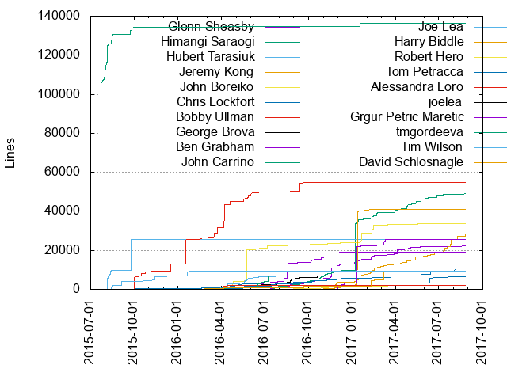
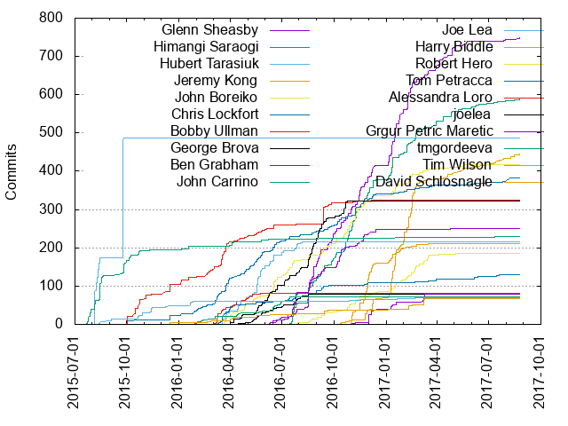

Authors
| Author | Commits (%) | + lines | - lines | First commit | Last commit | Age | Active days | # by commits |
|---|
| Glenn Sheasby | 748 (12.19%) | 22188 | 11209 | 2016-06-09 | 2017-08-25 | 442 days, 4:19:12 | 156 | 1 |
| Himangi Saraogi | 588 (9.58%) | 49011 | 18694 | 2016-07-14 | 2017-08-25 | 407 days, 0:00:52 | 153 | 2 |
| Hubert Tarasiuk | 486 (7.92%) | 25414 | 12718 | 2015-07-22 | 2015-09-26 | 65 days, 22:17:28 | 59 | 3 |
| Jeremy Kong | 445 (7.25%) | 28227 | 7582 | 2016-10-28 | 2017-08-25 | 300 days, 18:39:38 | 97 | 4 |
| John Boreiko | 418 (6.81%) | 33601 | 8021 | 2016-03-17 | 2017-06-01 | 440 days, 18:57:53 | 155 | 5 |
| Chris Lockfort | 383 (6.24%) | 11104 | 27497 | 2015-09-11 | 2017-08-08 | 696 days, 1:46:09 | 186 | 6 |
| Bobby Ullman | 324 (5.28%) | 54898 | 41770 | 2015-09-29 | 2016-12-06 | 433 days, 6:17:31 | 123 | 7 |
| George Brova | 322 (5.25%) | 6992 | 5531 | 2016-03-31 | 2016-10-24 | 206 days, 15:06:05 | 79 | 8 |
| Ben Grabham | 250 (4.07%) | 19184 | 13415 | 2016-06-14 | 2017-04-24 | 313 days, 22:07:36 | 74 | 9 |
| John Carrino | 229 (3.73%) | 136387 | 21179 | 2015-07-22 | 2017-07-12 | 720 days, 2:21:03 | 69 | 10 |
| Joe Lea | 215 (3.50%) | 7091 | 3644 | 2016-03-17 | 2016-08-05 | 141 days, 3:58:52 | 46 | 11 |
| Harry Biddle | 212 (3.46%) | 40903 | 34928 | 2016-10-11 | 2017-03-17 | 156 days, 14:49:53 | 54 | 12 |
| Robert Hero | 185 (3.01%) | 1941 | 1127 | 2016-07-14 | 2017-05-03 | 293 days, 1:11:22 | 71 | 13 |
| Tom Petracca | 130 (2.12%) | 6457 | 3103 | 2016-03-10 | 2017-08-10 | 518 days, 2:33:33 | 65 | 14 |
| Alessandra Loro | 82 (1.34%) | 1969 | 1388 | 2016-03-03 | 2016-05-24 | 82 days, 19:17:39 | 27 | 15 |
| joelea | 79 (1.29%) | 57 | 318 | 2016-03-18 | 2016-08-17 | 151 days, 15:26:05 | 39 | 16 |
| Grgur Petric Maretic | 79 (1.29%) | 25392 | 3810 | 2016-11-01 | 2017-03-10 | 129 days, 4:10:21 | 25 | 17 |
| tmgordeeva | 72 (1.17%) | 6803 | 995 | 2016-01-28 | 2016-07-16 | 169 days, 4:01:57 | 40 | 18 |
| Tim Wilson | 70 (1.14%) | 9305 | 7722 | 2015-08-13 | 2017-02-21 | 557 days, 23:07:51 | 33 | 19 |
| David Schlosnagle | 68 (1.11%) | 8876 | 2156 | 2015-09-30 | 2017-03-15 | 532 days, 16:54:25 | 37 | 20 |
These didn't make it to the top: Ashray Jain, tjwilson90, Mark Elliot, Jeffrey Chen, Steven Berler, David Cohen, rhero, Greg Bonik, nziebart, gmaretic, Samuel Souza, Jeffrey Nelson, Misha Wakerman, James Baker, Sandor Van Wassenhove, Phil Brown, Tanya Gordeeva, Andy Wu, Samuel, Punya Biswal, Alex Neronskiy, Robert Liu, Andrew Ash, kpurcell84, Garren Riechel, Spencer Stecko, George, Mike Glazer, Michal Glapa, Keith Amling, David Xiao, jnelson15, Matthew Avant, pnepywoda, Punyashloka Biswal, Jaap Weel, Andreea Marzoca, Yun Zhou, Tom Boam, Stephen Freiberg, Robert Fink, Lee Avital, twilson-palantir, lmaPalantir, datval, andy2palantir, Shanthanu Bhardwaj, Nathan Ziebart, Katherine Brainard, John Blessing, Ernest Zeidman, Chris Purcell, Carter Kozak, zakmagnus, sstecko, shashiadi, jochs, glapul, dyon, dpuller, bubchi89, ajlake, Vincent Tjeng, Taylor Stearns, Sam, Rootul Patel, Prayag Verma, Patrick Woody, Natacha Gabbamonte, Jared Newman, Jaap weel, EthanLozano, Diogo Holanda, David Lyness, Chris Holve, Benjamin Duffield, Ashar Fuadi, Ari Gesher, Alex Baker
Only top 20 authors shown
Only top 20 authors shown
| Month | Author | Commits (%) | Next top 5 | Number of authors |
|---|
| 2017-08 | Jeremy Kong | 12 (33.33% of 36) | Samuel Souza, Himangi Saraogi, Glenn Sheasby, Andreea Marzoca, twilson-palantir | 12 |
| 2017-07 | nziebart | 22 (23.16% of 95) | Jeremy Kong, Samuel Souza, Chris Lockfort, Himangi Saraogi, kpurcell84 | 18 |
| 2017-06 | Himangi Saraogi | 11 (17.19% of 64) | nziebart, Tom Petracca, gmaretic, Jeremy Kong, Samuel Souza | 20 |
| 2017-05 | Jeremy Kong | 16 (19.28% of 83) | Glenn Sheasby, Himangi Saraogi, Samuel, gmaretic, Samuel Souza | 13 |
| 2017-04 | Glenn Sheasby | 47 (37.60% of 125) | Himangi Saraogi, Jeremy Kong, Michal Glapa, Greg Bonik, Steven Berler | 16 |
| 2017-03 | Glenn Sheasby | 37 (20.79% of 178) | Robert Hero, Himangi Saraogi, Grgur Petric Maretic, David Schlosnagle, Jeremy Kong | 17 |
| 2017-02 | Jeremy Kong | 150 (37.41% of 401) | Glenn Sheasby, Himangi Saraogi, Robert Hero, John Boreiko, David Schlosnagle | 18 |
| 2017-01 | Jeremy Kong | 150 (26.88% of 558) | Glenn Sheasby, Himangi Saraogi, Harry Biddle, Robert Hero, John Boreiko | 22 |
| 2016-12 | Harry Biddle | 41 (17.75% of 231) | Jeremy Kong, Glenn Sheasby, Himangi Saraogi, Grgur Petric Maretic, John Boreiko | 19 |
| 2016-11 | Harry Biddle | 110 (20.11% of 547) | Himangi Saraogi, Glenn Sheasby, John Boreiko, Chris Lockfort, Ben Grabham | 24 |
| 2016-10 | Himangi Saraogi | 71 (18.30% of 388) | Glenn Sheasby, John Boreiko, Ben Grabham, George Brova, Chris Lockfort | 19 |
| 2016-09 | Glenn Sheasby | 79 (19.85% of 398) | Himangi Saraogi, George Brova, John Boreiko, Ben Grabham, Ashray Jain | 20 |
| 2016-08 | George Brova | 88 (21.15% of 416) | Ben Grabham, Glenn Sheasby, Himangi Saraogi, David Cohen, Bobby Ullman | 22 |
| 2016-07 | Glenn Sheasby | 77 (18.83% of 409) | Himangi Saraogi, John Boreiko, Joe Lea, George Brova, Ben Grabham | 28 |
| 2016-06 | John Boreiko | 51 (18.48% of 276) | George Brova, Joe Lea, Chris Lockfort, Ben Grabham, tmgordeeva | 21 |
| 2016-05 | Joe Lea | 75 (26.32% of 285) | Chris Lockfort, George Brova, joelea, John Boreiko, Bobby Ullman | 23 |
| 2016-04 | Joe Lea | 36 (17.65% of 204) | John Boreiko, Chris Lockfort, Alessandra Loro, George Brova, Tom Petracca | 17 |
| 2016-03 | Bobby Ullman | 72 (23.15% of 311) | Chris Lockfort, Alessandra Loro, Tom Petracca, Joe Lea, John Boreiko | 21 |
| 2016-02 | Bobby Ullman | 20 (27.78% of 72) | Chris Lockfort, tmgordeeva, Andy Wu, Tanya Gordeeva, David Schlosnagle | 11 |
| 2016-01 | tjwilson90 | 13 (20.97% of 62) | Tim Wilson, Bobby Ullman, John Carrino, Chris Lockfort, Tanya Gordeeva | 10 |
| 2015-12 | Bobby Ullman | 34 (66.67% of 51) | Chris Lockfort, Tim Wilson, tjwilson90, Jeffrey Chen, Alex Neronskiy | 10 |
| 2015-11 | Tim Wilson | 16 (32.00% of 50) | tjwilson90, Bobby Ullman, Alex Neronskiy, Chris Lockfort, John Carrino | 11 |
| 2015-10 | Bobby Ullman | 56 (36.60% of 153) | John Carrino, Mark Elliot, Tim Wilson, Chris Lockfort, tjwilson90 | 15 |
| 2015-09 | Hubert Tarasiuk | 208 (65.62% of 317) | John Carrino, Mark Elliot, Bobby Ullman, Punya Biswal, Chris Lockfort | 13 |
| 2015-08 | Hubert Tarasiuk | 227 (68.17% of 333) | John Carrino, Tim Wilson, tjwilson90, Ari Gesher | 5 |
| 2015-07 | Hubert Tarasiuk | 51 (54.84% of 93) | John Carrino | 2 |
| Year | Author | Commits (%) | Next top 5 | Number of authors |
|---|
| 2017 | Jeremy Kong | 376 (24.42% of 1540) | Glenn Sheasby, Himangi Saraogi, Robert Hero, John Boreiko, Harry Biddle | 53 |
| 2016 | Glenn Sheasby | 426 (11.84% of 3599) | Himangi Saraogi, John Boreiko, George Brova, Chris Lockfort, Ben Grabham | 68 |
| 2015 | Hubert Tarasiuk | 486 (48.75% of 997) | John Carrino, Bobby Ullman, Tim Wilson, Mark Elliot, tjwilson90 | 24 |
| Domains | Total (%) |
|---|
| palantir.com | 4206 (68.55%) |
|---|
| gmail.com | 940 (15.32%) |
|---|
| users.noreply.github.com | 468 (7.63%) |
|---|
| hotmail.com | 446 (7.27%) |
|---|
| andrew.cmu.edu | 42 (0.68%) |
|---|
| bonik.org | 15 (0.24%) |
|---|
| andrewash.com | 9 (0.15%) |
|---|
| csh.rit.edu | 5 (0.08%) |
|---|
| tstearns.com | 1 (0.02%) |
|---|
| robertfink.de | 1 (0.02%) |
|---|